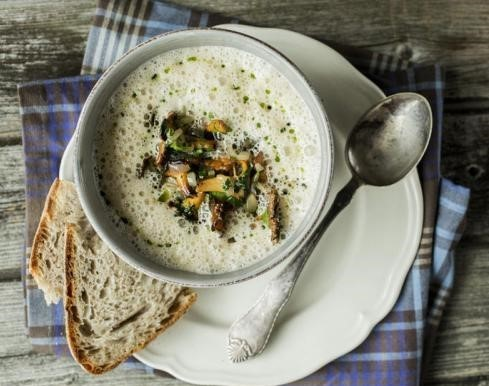

Autumn Menu: Delicious Mushroom Soup
Norway


Autumn has arrived and it is time to harvest culinary treats from the forest. Make mushroom soup!
Add a splash of cream, crème fraîche or mascarpone for better flavor. Serve with grated parmesan.
Tip: Adding a drop or two with mushroom or truffle oil before serving lifts the soup to another level.
Ingredients
(Serves 4)
- 1.1 lb. (500 g) cleaned mushrooms
- 2 shallots
- 2 cloves of garlic
- 2.9 cups (7 dl) chicken stock or vegetable stock
- 1.2 cups (3 dl) cream
- 4 teaspoons ramsons purée or pesto
- Fresh herbs – chives, thyme, chervil or parsley
- Salt
- Freshly ground pepper
- Lemon
Method
- Save the best-looking mushrooms for garnish (about half the amount) and cut the rest into small pieces. Melt the butter in a saucepan and sauté onion and garlic until the onion is soft and shiny. Add the mushrooms and let it fry a few minutes. Add stock and cream. Let it simmer for about 15 minutes.
- Run the soup in a blender. Season with salt, pepper and lemon juice. If the soup seems thick, add extra broth or milk.
- Fry the rest of the mushrooms in butter until golden. Season with salt, pepper, and sprinkle with fresh herbs. Add the mushrooms and garnish with ramsons puree. Serve with fresh bread.
Recipe: Godt.no